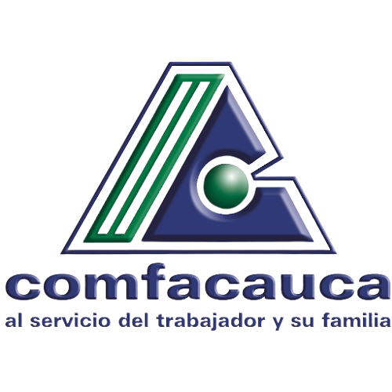

Manual de Intervención
Jhon Fredy Mera Mosquera
Inicio
Manual
Talleres
Seguimiento
Materiales
Sobre el autor
Manual Operativo
Aquí puedes descargar o visualizar el manual completo en PDF.
📄 Ver Manual